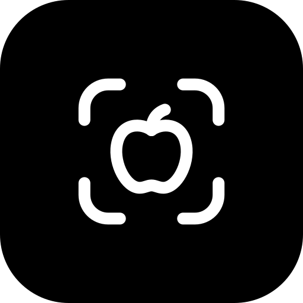
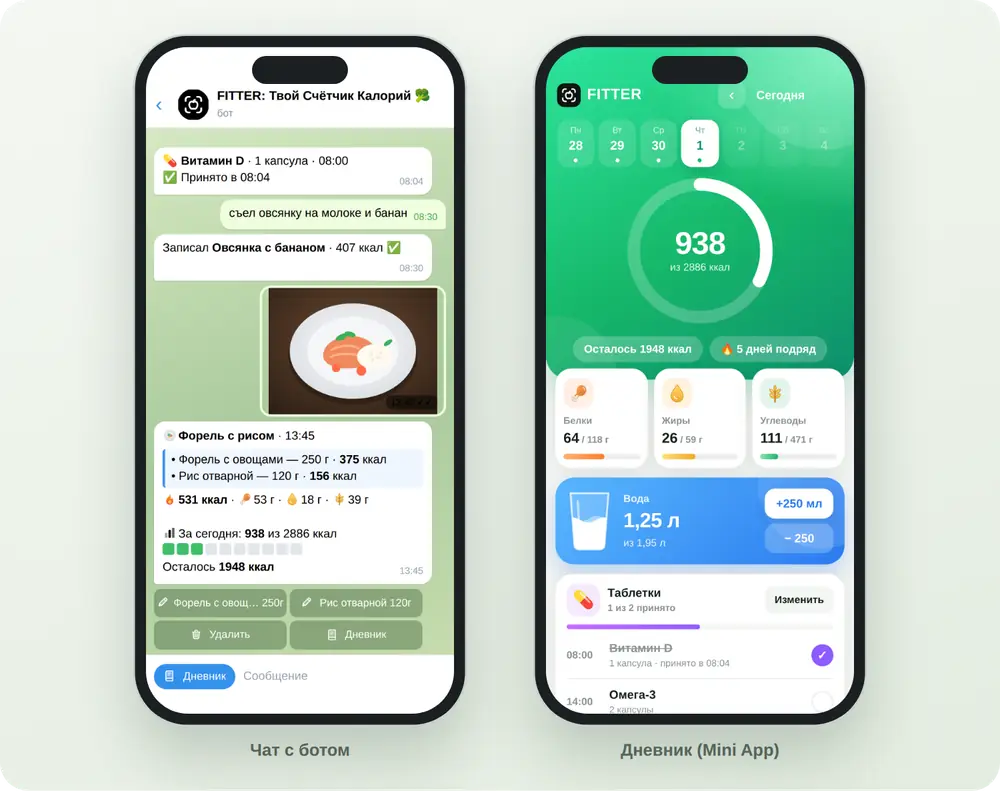

📷
Распознавание еды по фото
Отправьте снимок блюда. FITTER распознает продукты и рассчитает примерные калории, белки, жиры и углеводы.

FITTERFITTER — Telegram-бот для подсчёта калорий и БЖУ. Отправьте фото еды: ИИ распознает продукты, оценит порции и сохранит результат в дневнике питания.
Без установки отдельного приложения. Откройте бота в Telegram.

От фиксации приёма пищи до обзора прогресса — основные инструменты для ежедневного учёта в Telegram.
Отправьте снимок блюда. FITTER распознает продукты и рассчитает примерные калории, белки, жиры и углеводы.
Опишите еду сообщением, например: «съел два яйца и тост». Запись появится в дневнике.
Открывайте Telegram Mini App, чтобы посмотреть рацион, калории и сводку за выбранный день.
Пройдите короткую анкету, чтобы получить расчёт дневной нормы с учётом активности и цели.
Отмечайте выпитую воду кнопками. Бот напомнит попить каждые 30 минут, час, полтора или два часа, а ночью промолчит.
Сфотографируйте штрихкод или таблицу КБЖУ на упаковке, и бот запишет продукт точно по этикетке.
Записывайте вес и смотрите график изменений. Норма калорий пересчитывается под вашу цель.
Ведите дневник день за днём, собирайте серии и получайте награды за привычки.
Каждое воскресенье бот присылает оценку питания за неделю, что получилось и три совета на следующую.
Бот работает в Telegram. Откройте его, настройте дневную цель и отправьте первый приём пищи.
Перейти к боту ↗Коротко о том, как работает бот для подсчёта калорий по фото.
FITTER — Telegram-бот и дневник питания. Он помогает оценивать калорийность и БЖУ еды и вести ежедневные записи.
Откройте бота FITTER и отправьте фотографию блюда. ИИ распознает продукты и оценит порцию и её пищевую ценность. Результат можно проверить и отредактировать.
Нет, начать можно прямо в Telegram. Дневник открывается как Telegram Mini App.
Оценка по фотографии приблизительная и зависит от состава и размера порции. При необходимости исправьте продукт или вес. FITTER не заменяет консультацию врача или диетолога.
FITTER бесплатный. Откройте бота в Telegram и начните вести дневник питания.
Да. Если оценка не совпала с порцией, нажмите на продукт под записью и укажите правильное название или вес. Калории и БЖУ пересчитаются.
Да. Включите их командой /remind и выберите интервал: 30 минут, 1 час, 1,5 часа или 2 часа. Начало и конец дня настраиваются, ночью напоминаний нет.
Перейдите в Telegram-бот: t.me/FitterFoodBot.
Откройте FITTER в Telegram и добавьте первый приём пищи.